From a high point the church reads alongside the bank, the river and other buildings of Kolomenskoye; an ensemble is a group of buildings and the spaces between them, perceived together.
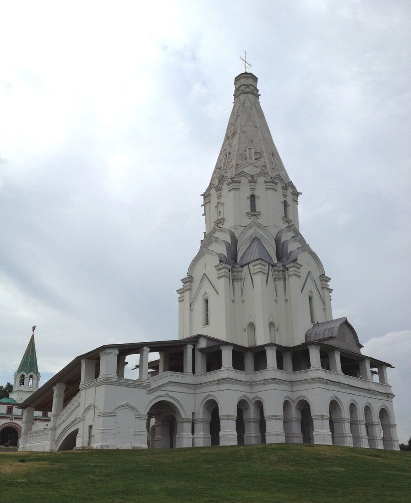
The Church of the Ascension of the Lord at Kolomenskoye. Photo: © UNESCO / Livio Garuccio, CC BY-SA 3.0 IGO. The image is unmodified.
Kolomenskoye · 1532 · an architectural investigation
How was stone ordered to take flight?
The church is small inside, but from the bank it looks like a white flash 62 metres high. Where exactly does stone stop seeming heavy? Find the answer with your own eyes.
Map of the self-guided route
Short route: 48 seconds of film → four decisions in the laboratory → conclusion. You can explore on your own with the audio walk or any section below.
End of the short route: 0 of 2 required steps.
1 of 3 · Film · 48 seconds
A church greater than itself
Outside — a white lightning flash over the Moskva River. Inside — a small family church. How did one building manage to become both?
Documentary photographs and an educational model; historical events are not re-enacted.Voice synthesised for the working version · subtitles available
Audio walk · 3:55
Four movements of the gaze
A single soundtrack leads from the bank to the cross. Real observation points change on screen; the detailed text does not get in the way of looking.
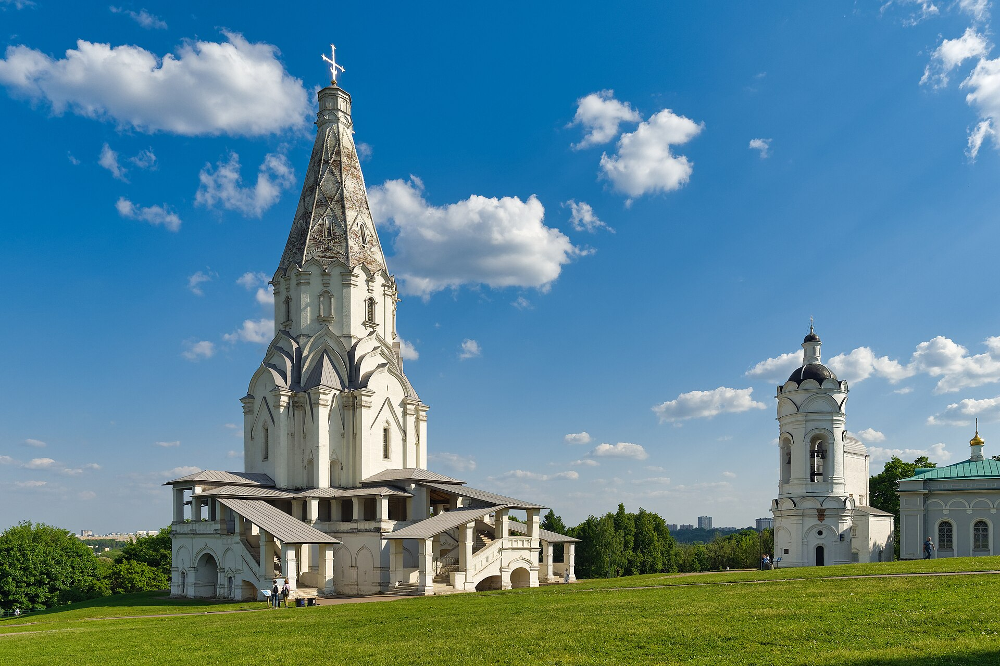
Read the audio guide transcript
Step back so that you can see the church together with the slope and the sky. For now do not look for the tent roof. Look at the ground: the high bank is already rising.
Now look to the sides. At the base a gallery spreads out — it seems to open its arms and give the vertical a run-up.
Raise your eyes step by step. The kokoshnik gables keep the gaze from striking the edge of the wall. Each next volume is a little narrower than the one before.
At the boundary of the last tier and the tent roof the roof does not begin a new movement — it receives the one already gathered. Trace the edge up to the cross, then let your gaze fall back to the bank.
The main discovery: this is not a tall roof on an ordinary building. The whole composition works upward — from the ground to the cross.
The working voice is synthesised. Before the final opening it will be replaced by a human recording; the content and chapters are already available for checking.
Look, don’t read
One church — four distances
The landscape, the ensemble, the building and the detail are shown in different documentary views.
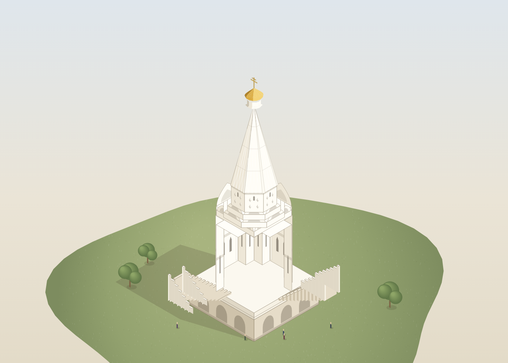
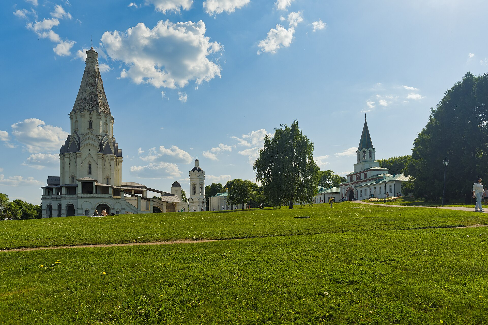
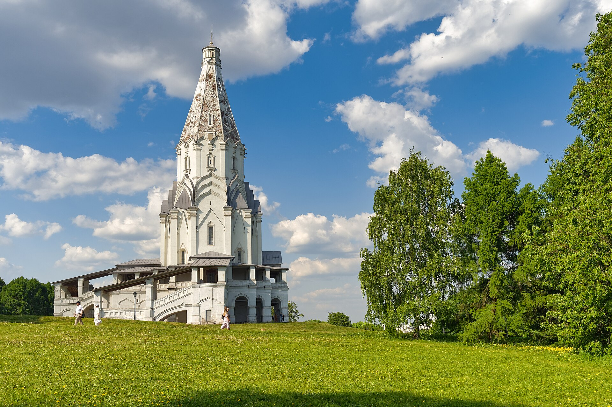
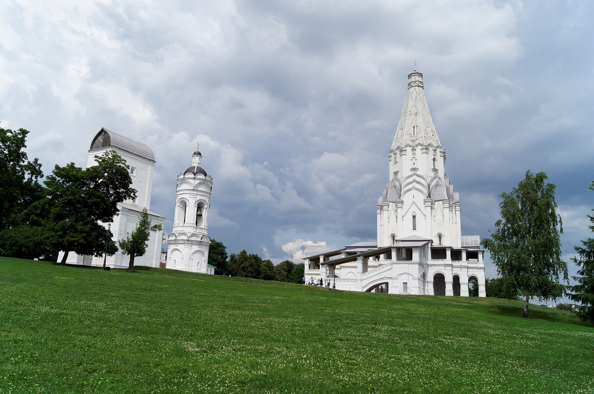
All four frames · documentary photographsLicences and authors · in the registry of sources
Three ways to look
What is before you: a document or an explanation?
The photograph shows the modern appearance. The diagram explains the structure. The trace of preservation reminds us: what stands before us is not a frozen 16th century.
Documentary photograph
Records today’s external appearance, but by itself does not explain the structure or the history of the changes.
Check the provenance →Before the laboratory · 20 seconds
Why is this form called a tent roof?
First get to know it with your eyes — then try to place the right crowning on the church yourself.
A tent roof is a tall polygonal roof: straight sloping faces converge at a single summit.
The name is clear from the silhouette: the architectural form resembles a tent of fabric stretched over supports. But at Kolomenskoye this is not a light canopy but a monumental stone crowning of the church.
The dome rounds off.The tent roof takes flight with straight faces.
The definition has been checked against the architectural dictionary of the Kultura.RF portal. Check the source →
Now look not just for a tall roof. In the laboratory, check which crowning will continue the movement of the whole building — from the bank to the cross.
2 of 3 · Your turn
Can you make stone take flight?
Choose four decisions and watch the silhouette. Where does it grow heavy? Where does it break? And where does the gaze race to the cross on its own?
Assemble the silhouette: every choice remains visible so that it can be compared and consciously corrected.
Four steps — and the church will come alive
1. Give the church a run-up
2. Pick up the movement
3. Don’t stop the gaze
4. Amplify the height
Start with the base. The model will change after each decision.
Model state: no choice made yet.
Text alternative to the educational model
The model changes four parts in sequence: the base, the transitional tiers, the crowning and the position in the landscape. A compact base keeps the silhouette collected; the gallery widens it and sets the movement going. One transition creates a sharp jump; several narrowing tiers carry the gaze smoothly. The dome gathers movement around the vault, the spire sharply draws out a single point, the faceted tent roof continues the narrowing of the whole volume. The high bank brings the natural slope into the common vertical.
This is a visual hypothesis, not an engineering calculation. The final combination is compared with a real photograph of the monument.
3 of 3 · The fork after the laboratory
Kolomenskoye does not put a tall roof on an ordinary box: the wide base, the narrowing transitions and the tent roof pass movement to one another.
Contrast of scale
Outside — a giant. Inside — a family church
It seems that a whole city ought to fit behind these walls. But here a princely family prayed.
62metres of height
The building struck not by the size of the hall but by the power of the image
Fact The museum-reserve gives a height of about 62 metres. Thick walls carry a small house church, and the white-stone details stand out against the white plaster beside the red brick roof.
The interior space is intimate compared with the outer silhouette. One enters not a vast city cathedral: the sense of height is born of proportions, light and the movement of the gaze.
A house church for the grand-princely family, not a capacious city cathedral: here the human measure is set by a small hall, not by the outer 62-metre silhouette.
How the monument was preserved
How the church passed through four centuries of change
Behind the white silhouette stand not only the patron and the presumed architect but also generations of researchers and restorers.
The white silhouette has come down to us thanks to people
Some measured the cracks, others strengthened the masonry, others returned lost details to the monument. What stands before us is not a “frozen 16th century” but a genuine structure that was studied, altered and rescued over four centuries.
An editorial explanation based on materials of the Kolomenskoye museum-reserve and UNESCO. This is not an archival quotation and not a fictional testimony.The church has taken flight: construction was completed, the church was consecrated. The main stone volume has come down to us, but its surfaces and details survived many repairs.
They rescued — and changed: during Nikolay Shokhin’s repairs the church was covered with cement plaster, the vault was relaid and parts of the cornices were replaced. Today such an approach has itself become a lesson in the history of restoration.
The monument has acquired the name of a defender: Pyotr Baranovsky headed the museum at Kolomenskoye, studied and restored the Church of the Ascension, turning the conversation from “renovate it prettier” back to scholarly preservation.
First the evidence, then the decision: research refined the early forms; later a comprehensive restoration took place, and the iconostasis was reconstructed from the 16th-century Royal Doors. This is a reconstruction from a source, not an interior that miraculously survived.
The story is not over: the museum continues work on preserving the ensemble. The modern white silhouette is not an “untouched 16th century” but the result of almost five centuries of observation, mistakes and care.
Architectural secrets
Choose one mystery — or open all six
Why doesn’t the tent roof fall, visually? Who thought it up? What here is Russian and what is European? Is this the first stone tent-roof church? Here begins a dispute that is more interesting than a ready answer.
Open the architectural dossier: 6 investigations
Russia and the world · a conventional typological diagram
Three buildings reach into the sky. But each in its own way
Press the buttons and overlay the conventional outlines. This is a comparison of ways of building a vertical image, not a survey, a single scale or a proof of borrowing.
Make your bet first
In which form does the upward movement begin closest to the ground?
Choose a form, then test yourself by overlaying the outlines.
Overlay the outlines
Three forms stand on one base line. Watch where exactly the ascent begins.
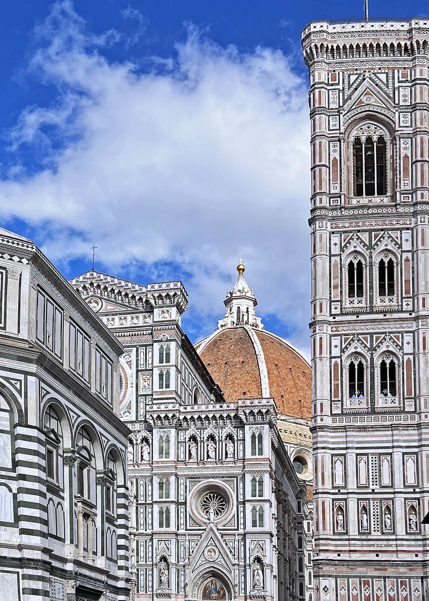
Movement gathers around the huge vault. This is a comparison of principle, not proof of influence.
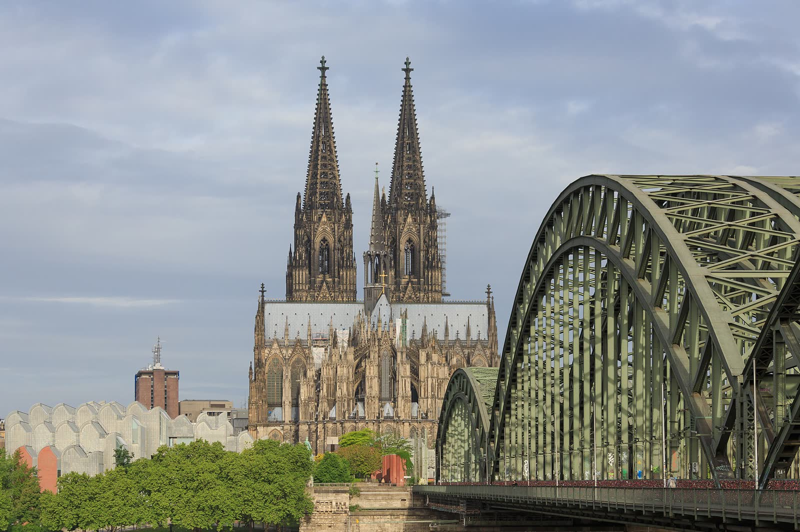
The sharpness is concentrated in a pair of spires; the vertical splits in two.
The gaze begins its ascent at the ground and passes through the whole building without a sharp stop.
The tent roof changes character
One principle — four completely different voices
After 1532 the tent-roof principle unfolded in different ways: it soloed, it gathered a noisy ensemble, it turned into stone lace and it grew out of wood. This is a typological comparison, not a claim that every church directly copied Kolomenskoye.
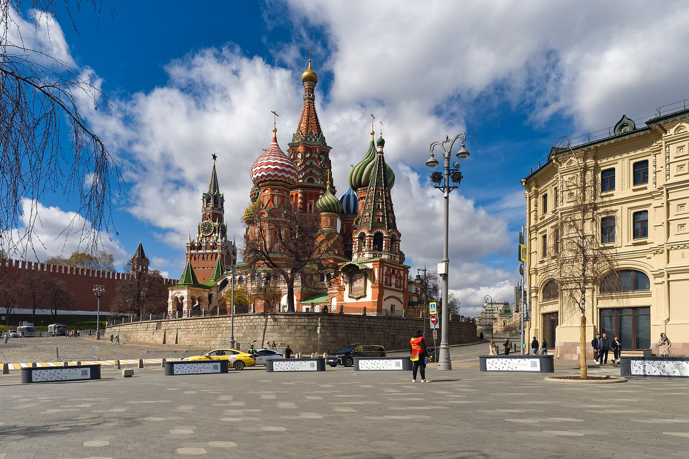
The vertical no longer solos. The central tent roof conducts a whole choir of towers, cupolas, colours and routes.
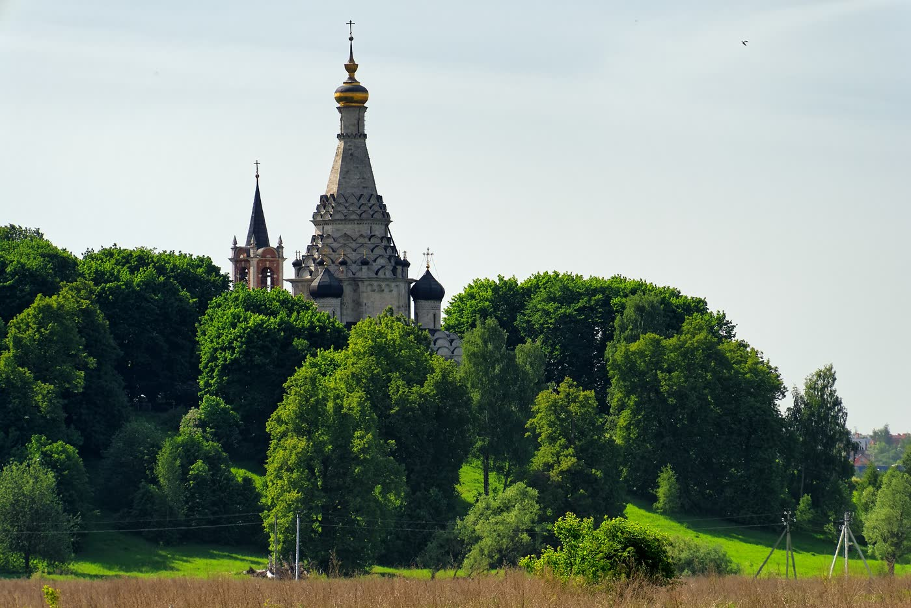
One tent roof still commands the silhouette, but around it the cupolas and kokoshnik gables gather more closely. We compare the visible principle without claiming direct borrowing.
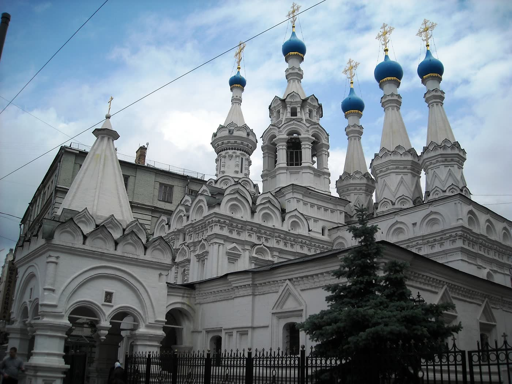
First examine the silhouette. The explanation of the rhythm will open after the task.
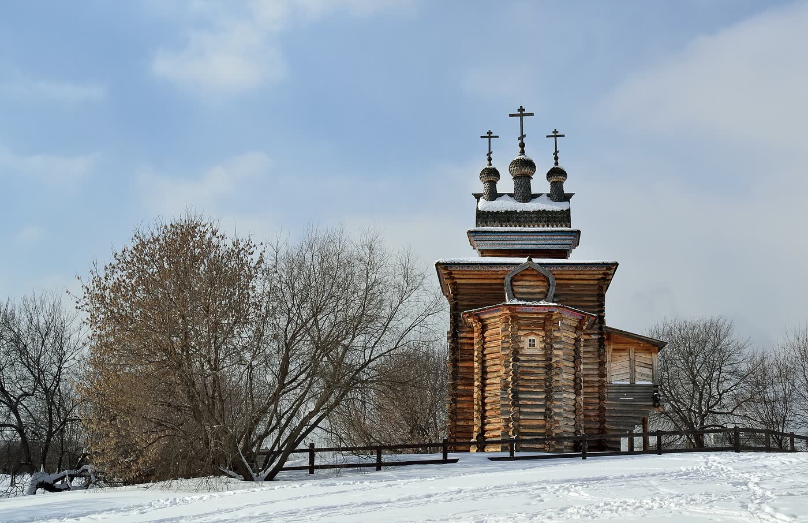
The same upward impulse — but in a different voice. Logs, broad roofs and a high wooden tent roof make the silhouette warmer and more austere.
Look like a researcher: they are relatives by the tent-roof principle, not four copies of one style. The direct chain “one church gave birth to another” is not proven in every case — we compare what is actually visible: the silhouette, the rhythm and the work of the tent roof.
Find the change of character
Where does a lone summit turn into a repeating stone rhythm?
Look for the repetition of the form in the photograph. The caption does not give away the answer.
A game of observation
Break the ascent with one move
Remove one layer right on the diagram and compare the silhouette before and after. What will most sharply break the transfer of movement from the wide base to the tent roof?
Choose a layer: the change will happen on the diagram beside it.
Checking the discovery
Can you recognise the tent-roof vertical without a hint?
Three short decisions. The answer appears right beside them — you won’t have to look for it at the bottom of the page.
From which point is it best to check the connection between the building and the bank?
Which break will most heavily sit the tent roof on the heavy lower part?
What does the similarity of four tent-roof churches prove?
Answer three questions — and you will get the result of the route.
Museum calendar
Architecture for every day
One month on screen, 31 separate occasions. We do not hide the empty days: the calendar will be filled with accepted releases.
Free-form ending · a question from the editors
Didn’t find an answer — ask the editors
This is an ordinary letter, not a chat and not an automatic subscription. The editors will check the question against sources; we do not promise a reply time.
Open the letter about the monument →
The letter is not published automatically. For new releases only the RSS feed is available; mail and Telegram subscriptions are not yet connected.
Crowning on site or from a photograph
Draw your gaze through three transitions
Find the slope and the gallery, then the narrowing tiers and the tent roof. If the gaze passes through them without a sharp stop — you have read the design of the building.
- Stand so that you can see the bank in full.
- Draw your gaze from the lowest point of the slope to the cross.
- Name the place where the movement could break off.
A family mission · 5 minutes
Architect asks the viewer to cover part of the separate diagram above, or of the real view on site, with a palm; here the photograph remains a document without a digital mask. Then swap roles.
Open the separate game diagram · Back to the map of the self-guided route ↑
Checking the story
Where is the fact and where is the beautiful version?
We do not ask you to take the museum’s word for it. Here you can verify the date, the attribution hypothesis, the scholarly dispute and the provenance of the photograph.
Open the registry of sources, authors and licences
- 01The Kolomenskoye museum-reserve — the date, the height, the structure, the Russian and Western European elements, cautious wording on authorship and tradition.
- 02Kultura.RF / Museum of Architecture — composition, Renaissance and Gothic features, the version of Petrok Maly.
- 03Architecture of Rus in the 16th century — the wooden tradition and the dispute between Kolomenskoye and Alexandrovskaya Sloboda.
- 04The Great Russian Encyclopedia — the place of tent-roof churches and Gothic techniques in 16th-century architecture.
- 05The State Historical Museum — the Intercession Cathedral and the development of the tent-roof composition.
- 06UNESCO World Heritage Centre — the world significance and influence of the monument.
- 07UNESCO photograph — © UNESCO / Livio Garuccio, CC BY-SA 3.0 IGO, unmodified.
- 08The Great Russian Encyclopedia: the Gothic — the tower dominants of Cologne Cathedral and the limits of the typological comparison.
- 09The Great Russian Encyclopedia: the dome — the dome of Santa Maria del Fiore as an urban dominant of the Renaissance.
- 10Photo of the general view — Alexxx1979, CC BY-SA 4.0; cropped for the web and the film.
- 11Photo of the ensemble with the Front Gate — Alexxx1979, CC BY-SA 4.0; cropped for the web and the film.
- 12The lower view of the church — Alexxx1979, CC BY-SA 4.0; cropped for the web and the film.
- 13Photo of the architectural details — Vyacheslav Argenberg, CC BY 4.0; cropped for the web.
- 14Santa Maria del Fiore — Mariordo, CC BY-SA 4.0; cropped and reduced for the web.
- 15Cologne Cathedral — CEphoto, Uwe Aranas, CC BY-SA 4.0; cropped and reduced for the web.
- 16The Intercession Cathedral — Alexxx1979, CC BY-SA 4.0; cropped for the web.
- 17Cultural properties of the Moscow Region — the Church of the Transfiguration in Ostrov, second half of the 16th century.
- 18Kultura.RF — the Church of the Nativity of the Mother of God in Putinki, 1649–1652, and three decorative tent roofs.
- 19The Kolomenskoye museum-reserve — the wooden Church of Saint George of 1685 and the history of its move from the Russian North.
- 20The Church of the Transfiguration in Ostrov — Alexxx1979, CC BY-SA 4.0; cropped and reduced for the web.
- 21The Church of the Nativity of the Mother of God in Putinki — Elisa.rolle, CC BY-SA 4.0; cropped and reduced for the web.
- 22The wooden Church of Saint George — Dmitry Ivanov, CC BY-SA 4.0; cropped and reduced for the web.
- 23The Kolomenskoye museum-reserve: Pyotr Baranovsky — director of the museum from 1923 and restorer of the Church of the Ascension.
- 24Report of the Ministry of Culture of the Russian Federation for UNESCO — the history of repairs, including the works of 1866–1867, 20th-century research and the comprehensive restoration of 2003–2007.
- 25The Kolomenskoye museum-reserve: improvement and restoration — the works of 2024–2025 and the church’s status in the preservation programme.
- 26Research Museum of the Russian Academy of Arts: the eastern façade by I. V. Rylsky — a documentary survey basis for checking the large proportions; the digital copy is not reproduced for lack of an open licence.
- 27Research Museum of the Russian Academy of Arts: the eastern façade by N. A. Shokhin — a historical survey of the 1860s; a public animation of the museum scan requires separate permission.
- 28Terms of use of the collection of the Research Museum of the Russian Academy of Arts — museum images are not copied or traced without prior written permission.
- 29“Secrets of the Church of the Ascension” — official confirmation of the existence of 19th–20th-century survey drawings and of N. A. Shokhin’s sections.


Where next
Continue the discovery in three ways
Continue the topic with an action, a verifiable source or a meeting with the real monument.